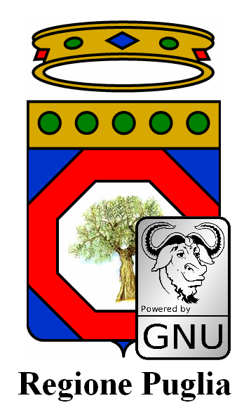

La legislazione sul software aperto e libero (FOSS o FLOSS che dir si voglia) in Italia è piuttosto indietro, con un Disegno di Legge (il n. 1188) presentato nel lontano febbraio 2002 da un manipolo di senatori (primo firmatario Fiorello Cortiana dei Verdi) e da allora incagliato in esame alla 1a Commissione Affari Costituzionali. Ben otto anni dunque, e nulla lascia sperare che qualcosa possa cambiare.
In realt√†, a livello governativo sono state avviate alcune azioni, ma che non hanno finora portato a risultati concreti. Sempre nel 2002 fu istituita con Decreto Ministeriale una apposita ‚ÄúCommissione per il software a codice sorgente aperto nella Pubblica Amministrazione‚Äù il cui lavoro port√≤ alla pubblicazione di una “Indagine conoscitiva sul software open source“. Una successiva Direttiva del dicembre 2003 “Sviluppo ed utilizzazione dei programmi informatici da parte delle PA” sanc√¨ la possibilit√† da parte della Pubblica Amministrazione di acquisire ed utilizzare programmi informatici “open source”. Da febbraio a luglio 2004 fu attivo poi un gruppo di lavoro, volto a proseguire i lavori della c.d. ‚ÄúCommissione Meo‚Äù del 2002 e che di fatto produsse un documento finale con proposte articolate tra le quali l‚Äôistituzione di un ‚ÄúCentro di competenza OSS per la PA‚Äù contretizzatosi nel famigerato ‚ÄúOsservatorio sull‚Äôopen source‚Äù nato in seno al CNIPA (oggi DigitPA). Esso raccoglie le esperienze delle Pubbliche Amministrazioni italiane nell’uso di software open source, come pure una sorta di elenco dei ‚Äúfornitori‚Äù di servizi legati al FOSS, al quale chiunque pu√≤ registrarsi. Di fatto, ad oggi l‚ÄôOsservatorio appare n√© pi√π n√© meno che un mero elenco di ‚Äúesperienze‚Äù e ‚Äúfornitori‚Äù, informazioni peraltro non pi√π aggiornate dal 2007.
Insomma, buone le intenzioni, ma davvero scarsi i risultati, almeno finora. E se andassimo a fare due conti su quanto saranno costati Commissione, Gruppo di lavoro e Osservatorio stesso, forse ci morderemmo anche le mani in qualit√† di contribuenti…
Una iniziativa da segnalare √® senza dubbio quella attuata dal Formez con la¬†Italian Open Data Licence (IODL) v1.0, nata nell’ambito del progetto MiaPA, l’applicazione di “social check-in” per segnalare la performance degli uffici pubblici da parte dei cittadini. Formez auspica l’uso della IODL da parte delle amministrazioni pubbliche che vogliano imboccare concretamente un percorso di open government.
Un ulteriore riferimento legislativo di fondamentale importanza per tutto quanto concerne i dati digitali – e del quale le iniziative legislative regionali devono tenere conto – √® costituito dal¬†D.Lgs. 07/03/2005 n. 82 e s.m.i. il cosiddetto Codice dell’Amministrazione Digitale, che purtroppo per√≤ trascura totalmente proprio la materia degli open data.
Ottime notizie da alcune Regioni… e non solo
Svariate illuminate Regioni hanno comunque deciso gi√† da anni di dotarsi di leggi proprie per favorire l‚Äôuso del software open source. L‚ÄôEmilia-Romagna ha emanato la L.R. 11/2004, il Friuli Venezia Giulia la L.R. 8/2006, l‚ÄôUmbria la L.R. 11/2006, il Veneto la L.R. 19/2008, il Piemonte la L.R. 9/2009 e la Toscana la L.R. 54/2009. La Lombardia ha in essere un progetto di legge presentato a luglio del 2010, cos√¨ come la Sardegna ha un proprio disegno di legge in cantiere risalente a ottobre 2008. Recente poi √® la notizia (grazie Antonio) che addirittura il Consiglio Comunale di Fabriano ha deciso di “abbracciare” il software open source, dimostrando che anche una piccola amministrazione locale √® capace di grandi rivoluzioni a livello gestionale.
Come riferimento per aggiornamenti riguardo la normativa, sia nazionale che regionale, potete prendere certamente a riferimento l’Associazione per il software libero.
Anche il Presidente Vendola nella mia Puglia ha annunciato mesi fa la presentazione di un disegno di legge sul pluralismo informatico, teso a promuovere e diffondere il FLOSS (cos√¨ definito nel DdL) a livello regionale. Si tratta di una iniziativa che apparentemente stride, e anche parecchio, con il precedente protocollo d‚Äôintesa firmato da Vendola con Microsoft verso fine 2010 per la costituzione di un centro di competenza per promuovere l‚Äôinnovazione. Il Partito Pirata italiano e l’Associazione per il Software Libero hanno sin da subito contestato l‚Äôaccordo, chiedendo a Vendola di rispondere ad una lettera aperta. Cosa che lui ha fatto, motivando dal suo punto di vista le ragioni dell‚Äôiniziativa. Interessante notare come la vicenda abbia destato molti interessi e dubbi¬†anche all’estero.
Pur lasciando molto perplesso anche me, non voglio qui riprendere la discussione, gi√† avviata nei contesti che vi ho segnalato. Sembra per√≤ che le critiche abbiano indotto Vendola a cercare di capirne un p√≤ di pi√π sulla questione. E‚Äô infatti sempre di dicembre scorso la notizia riportata da Punto Informatico che Vendola abbia avuto un incontro con Richard Stallman, guru del software libero, per “fare un approfondimento con alcuni dei protagonisti pi√π importanti della battaglia per il software libero” e addirittura abbia pensato di coinvolgerlo nella revisione proprio del DdL sul pluralismo informatico. Ad oggi per√≤ non sappiamo se l’incontro abbia avuto degli sviluppi di qualche tipo.
In Puglia si potrebbe osare di pi√π…
Bene, con tali favorevoli presupposti e grande lungimiranza da parte di Vendola, mi viene spontaneo rilanciare e cogliere l’occasione per capire se a Nichi stia a cuore anche la grande questione riguardante i dati aperti.
Di open data se ne è parlato ampiamente, in varie forme e con illustri personaggi, anche durante il Festival dell’innovazione - ma soprattutto il contestuale Public Camp - entrambi organizzati proprio dalla Regione Puglia a Bari agli inizi di dicembre 2010.
Su TANTO seguiamo l‚Äôhype che ormai si √® avviato sull’onda dell’open government e sugli open data da qualche tempo, e ovviamente come blogger cerchiamo non solo di far da volano a notizie e iniziative sul tema, ma anche di essere propositivi, con la realizzazione di mashup con dati aperti e liberi e la partecipazione diretta a eventi (ITN 2010 e il¬†Gis Day 2010 di Palermo).

Ed √® in quest’ottica che noi di TANTO vogliamo avanzare la¬†proposta al Presidente Vendola e alla sua Giunta, di integrare il Disegno di Legge sul pluralismo informatico che stanno per presentare in Consiglio Regionale, con alcuni articoli che promuovano la diffusione di dati aperti e liberi nell‚Äôambito dell‚Äôamministrazione regionale come pure in tutte le altre pubbliche amministrazioni pugliesi, dai Comuni alle Province. Penso ad esempio al grande valore aggiunto del quale potrebbero godere i cittadini con la diffusione in formato aperto e il libero utilizzo dei dati di monitoraggio delle componenti ambientali (aria, acqua, suolo) e dei grandi comparti come quello dei rifiuti. Del resto il Sistema Informativo Territoriale pugliese gi√† consente da tempo lo scaricamento e la fruizione libera (sebbene manchi una chiara definizione della licenza d‚Äôuso) dei dati territoriali.
Perciò, qui di seguito proponiamo alcuni articoli da includere nel DdL sul pluralismo informatico, che riguardano proprio i dati aperti e liberi. Naturalmente si tratta di una proposta certamente perfettibile, ed è per questo che invitiamo tutti i nostri lettori e chiunque abbia interesse, ad avanzare proprie proposte per migliorarla. Il nostro obiettivo è quello di presentarle ufficialmente al Presidente Vendola, e se verranno mai accolte, la Regione Puglia sarebbe la prima a sancire legislativamente la diffusione di dati aperti e liberi. Il passo successivo sarebbe ovviamente quello di costruire un portale regionale, punto di riferimento istituzionale, analogamente a quanto fatto in maniera così lungimirante dalla Regione Piemonte con http://dati.piemonte.it
Gli emendamenti che proponiamo al DdL
Il testo del DdL n. 5 del 10/02/2011 “Norme in materia di pluralismo informatico, sull’adozione e la diffusione del free libre open source software e open hardware e sulla portabilit√† dei documenti nella pubblica amministrazione regionale e locale” proposto dalla Giunta della Regione Puglia √® reperibile sul sito web del Consiglio Regionale, nella sezione “Proposte di Legge” con Atto Consiliare n. 68. Sul medesimo sito, per chi volesse, √® possibile seguirne l’iter istitutivo.
Qui di seguito proponiamo in maniera molto asciutta ed essenziale le poche modifiche al testo in discussione, che potrebbero dargli obiettivi ancora pi√π ampi, unendo in maniera sinergica la promozione dell’utilizzo del FLOSS con la liberazione dei dati pubblici, in possesso proprio delle Pubbliche Amministrazioni.
Art. 1 РFinalità
Dopo le parole “nel rispetto della normativa statale in materia di informatizzazione della Pubblica Amministrazione” inserire le seguenti parole “e in particolare da quanto disposto dal D.Lgs. 07/03/2005 n. 82 e s.m.i.“.
Art. 3 – Definizioni
Inserire le seguenti definizioni:
q) per dati pubblici si intendono tutti i dati conoscibili da chiunque, così come definiti alla lett. n) del D.Lgs. 07/03/2005 n. 82 e s.m.i. I dati pubblici sono dati che non sono soggetti a limitazioni di privacy o sicurezza.
r) per dati aperti (o open data) si intendono quei dati organizzati in archivi che, nel rispetto delle condizioni così come definite alla lett. b), c) e d) del presente articolo, nonché al Capo V del D.Lgs. 07/03/2005 n. 82 e s.m.i., rispondono ai seguenti requisiti:
- sono resi direttamente disponibili ai chiunque, senza necessità di identificazione informatica, come disposto dal comma 3 art. 54 del D.Lgs. 07/03/2005 e s.m.i.;
- sono ricercabili per parole chiave o per ambito tematico mediante strumenti quali cataloghi o motori di ricerca;
- sono pubblicati così come raccolti alla fonte, con il medesimo livello di definizione e di dettaglio, non in forma aggregata o modificata;
- sono immediatamente disponibili, al fine di preservarne il valore, l‚Äôattendibilit√† e l’integrit√†;
- sono strutturati in modo tale da consentire il loro trattamento automatizzato da parte di elaboratori e macchine;
- sono disponibili in formati non proprietari, ovvero secondo standard aperti;
- non devono essere soggetti a copyright, brevetti, marchi di fabbrica o regole sul segreto commerciale, eventuali limitazioni sulla privacy e/o la sicurezza possono essere ammesse come disciplinate dalle leggi vigenti;
- indicano le metodologie di realizzazione adottate.
s) per formato proprietario (o chiuso) si intende qualsiasi formato di archivio dati le cui specifiche tecniche non siano di pubblico dominio¬†o non siano disponibili gratuitamente, ovvero siano soggette a restrizioni basate su diritti d’autore.
Art. 6 – Raccolta e gestione dei dati da parte della Pubblica Amministrazione [in sostituzione degli artt. 6 e 6 bis]
1. Tutti i servizi telematici messi a disposizione dalla Pubblica Amministrazione Regionale e Locale devono rispettare rigorosi criteri atti a favorire i massimi livelli di accessibilità sia per i diversamente abili sia in termini di neutralità tecnologica.
2. La Pubblica Amministrazione Regionale e Locale, con riferimento ai dati pubblici dalla stessa raccolti e gestiti, adotta standard aperti, protocolli aperti e formati aperti, cos√¨ come definiti alle lett. b), c) d) dell’art. 3, rispettando i criteri dei dati aperti cos√¨ come definiti dalla lett. r) dell’art. 3.
3. La Pubblica Amministrazione Regionale e Locale in possesso di dati pubblici promuove la loro diffusione in forma di dati aperti, come definiti alla lettera r) dell’art. 3, con modalità che ne consentano la rintracciabilità dai motori di ricerca su internet e lo scaricamento dai siti web istituzionali delle Pubbliche Amministrazioni stesse assicurando la parità di trattamento tra gli utilizzatori.
4. La Pubblica Amministrazione Regionale e Locale si impegna affinché tutti i servizi messi a disposizione siano interoperabili, facciano uso di protocolli e formati aperti, e permettano, attraverso lo sviluppo di piattaforme applicative comuni, l’interazione e l’integrazione fra di loro.
5. La Pubblica Amministrazione responsabile dei dati, al fine di rendere effettivo l’utilizzo dei dati in suo possesso, designa il responsabile del procedimento per le ¬†richieste di utilizzazione dei dati e per rispondere alle denunce di violazioni dei principi di cui alla lettera r) dell‚Äôart. 3.
Art. 7 bis – Ulteriori obblighi della Pubblica Amministrazione allargata [nuovo articolo]
1. La Pubblica Amministrazione nella predisposizione dei bandi di gara, nonch√© nella selezione di progettisti, collaboratori e consulenti, richiede, con apposita clausola contrattuale, che il fornitore, il consulente o l’appaltatore del servizio fornisca i dati dallo stesso raccolti, nonch√© i pareri, le consulenze ed i progetti, oltre che nelle forme tradizionali, anche in formato digitale e con standard che ne consentano l’elaborazione da parte di elaboratori e la modificabilit√† da parte della Pubblica Amministrazione.
2. I dati detenuti dalle Pubbliche Amministrazioni Regionali e Locali, così come definito alla lett. m) del D.Lgs. 07/03/2005 n. 82 e s.m.i., ivi compresi i dati prodotti da software sviluppato da terzi, memorizzati in un formato proprietario per il quale le Pubbliche Amministrazioni Regionali e Locali detengono tutti i diritti,  saranno convertiti in formati aperti entro due anni dalla data di entrata in vigore della presente legge.
3. I dati esistenti memorizzati in un formato proprietario, del quale la Pubblica Amministrazione Regionale e Locale non possiede i diritti, potranno continuare ad essere memorizzati ed elaborati in quel formato. Progetti e attività che continuano ad usare formati chiusi devono essere riesaminati ogni quattro anni, per determinare se il formato sia diventato aperto e, in caso contrario, se un formato appropriato aperto esista e possa essere adottato in luogo di quello proprietario.
4. In caso di progetti impegnati a convertire dati già esistenti da un formato proprietario in un altro formato, per quest’ultimo deve essere scelto un formato di dati aperto, a meno che non vi siano motivi tecnici o giuridici che lo impediscano.
5. In caso vengano resi pubblici dati esistenti, questi devono essere convertiti in formati aperti, tenendo conto delle situazioni descritte nei commi precedenti.
“Open data, tutti ne parlano, ma come si fa?”
Per rispondere a questa domanda, l’Associazione italiana per l’Open Government ha da poco messo online le “Linee guida per l’open data”, una sorta di vademecum indirizzato a tutti i soggetti che hanno seriamente intenzione di liberare i dati in loro possesso.¬†Una agile cassetta degli attrezzi nella quale troviamo le definizioni fondamentali di open data e open government, perch√© passare agli open data, quali aspetti tecnici affrontare e le questioni giuridiche ad essi collegate.
Un’altra indispensabile risorsa da tenere presente √® Making Your Data Open: a Guide di Open Data Commons, un progetto della Open Knowledge Foundation che ha come obiettivi proprio la diffusione del concetto di open data e il supporto per la loro adozione.
Da poco è stato inoltre lanciato APPSFORITALY, un contest organizzato da Associazione Italiana per l’Open Government, IWA e TopIX per la realizzazione di applicazioni basate su dati pubblici rilasciati da amministrazioni pubbliche. Ma se gli open data disponibili sono ancora così pochi, sarà difficile avere un buon numero di partecipanti.
Insomma, gli ingredienti ci sono tutti, le opportunit√† anche, la gente non manca…¬†Quale migliore occasione dunque per la Regione Puglia affinch√© approvi il DdL e contribuisca concretamente a scatenare la creativit√† di tutti gli hacktivisti che ci sono in giro per l’Italia?

{kind=link}